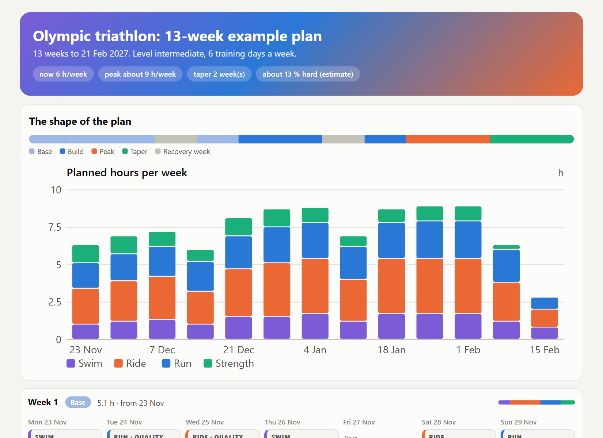

Rampwise is an AI coach for triathletes, runners, cyclists and swimmers. Pick an event (triathlon, duathlon, running, cycling or open-water swimming), get a periodised plan, and let it adjust tomorrow's session to how you are actually doing. Works from your own Garmin data, or from a few numbers you type.
Independent project, not affiliated with Garmin Ltd. Experimental: not medical advice, no promised results.

Seventeen example plans built from made-up numbers. Open one to see every week, each session's steps, and the reasons behind the plan. Give your own numbers to get your own.
A plan is the start. Rampwise keeps coaching after you press go.
Base, build, peak and taper, a lighter week every fourth week, and weekly volume that rises by 10 % at most. If the weeks you have cannot reach the usual peak safely, it says so.
Swim, bike, run and strength with brick runs, a swim/bike/run split per distance, and long-session caps. Swim sessions are written by time and effort, so they fit any pool.
Checks readiness, the injury-risk watch and how much of the plan you did, then keeps, softens or rests tomorrow's session. Changes your calendar only after you agree.
Flags long-run spikes, 14 days without rest, short sleep and your own pain check-ins, each with its evidence label. Prompts to look closer, never a diagnosis.
Calendar (.ics), spreadsheet (.csv), Zwift (.zwo) and ERG/MRC ride workouts. Garmin .fit workouts come from the Garmin-history planner.
Daily, weekly and monthly reports as Markdown or one interactive HTML file: recovery, week-over-week, plan against done and goal meters. Works offline.
Three steps. Nothing is guessed: it asks for your numbers, and says where an answer is an estimate.
A race: event, date, level, hours per week and days you can train. No race yet: it builds your aerobic base for the sports you choose. Or connect your Garmin data and let it read your last weeks of training.
Open it in the plan viewer, send it to your calendar, Zwift or trainer app, and see why each rule is there.
Each morning it re-checks tomorrow against your recovery and risk flags, and reports how the week compared with the last.
# no Garmin needed: five numbers are enough
python plan.py --event olympic-tri --event-date 2027-06-20 --level intermediate \
--hours-now 6 --max-hours 9 --days 6
# no race yet? build your aerobic base instead (2 to 52 weeks, default 12)
python plan.py --goal base --from-garmin --sports run,bike,swim --level intermediate --max-hours 9
# each run prints where it saved plan.json (in ~/rampwise-coach/plans/); use that path:
python plan_viewer.py PLAN.json # one interactive HTML page
python export_plan.py PLAN.json --format all # .ics .csv .zwo .mrc, and Garmin .fit if your heart-rate data are knownA coach should be able to say why. Rampwise marks each rule by how much stands behind it, and lists the papers in the repository.
A paper supports the direction. Example: a 2-week taper that cuts volume by about 41-60 % and keeps intensity gave the best gains in a meta-analysis of 27 studies.
A coaching convention. Example: a lighter week every fourth week, and the swim/bike/run split for each distance.
Nothing read supports it. Example: brick sessions as such. Shown openly so you can change it.
Every rule in a Rampwise plan or check carries one of three labels. Research means a published study supports the direction of the rule, and the reference says whether the full text or only the abstract was read. Practice means a coaching convention with no study behind it, such as a lighter week every fourth week. Gap means nothing read supports it, and the plan says so. A rule never claims more than its source: observational studies are called observational, and where studies disagree the rule is marked weak.
Papers read in full, among others:
Honest status: experimental, built and tested on one person's data. Not tested on other watches or AI clients yet, and no plan can promise a finish time. Read the disclaimer.
Free to use. You need an AI agent client such as Claude Code. A Garmin account is optional.
/plugin marketplace add Azahir21/rampwise
/plugin install rampwise@rampwiseThen ask: "Set up my Rampwise coach." It interviews you (goals, injuries, equipment, schedule) before it plans anything.
git clone https://github.com/Azahir21/rampwise
python rampwise/install.py --list # tools, folders, how well each was checked
python rampwise/install.py --tool codex # or cursor, zed, goose, ... several at once: --tool cursor,zed
python rampwise/install.py --tool all --dry-run # previewOne installer knows where 30 AI coding tools read their skills (Codex, Gemini CLI, Antigravity, Cursor, GitHub Copilot, Windsurf, Cline, OpenCode, Devin, Kilo Code, Goose, Zed, Amp, Augment, Kiro, Mistral Vibe, GitLab Duo, Qwen Code, Warp, Junie, Factory, Hermes, OpenClaw, Trae, Roo Code, plus an instructions-file fallback for Aider, Continue, Amazon Q and Jules). Folders come from each tool's official documentation; we ran only Claude Code ourselves. Cloud-only agents cannot reach your Garmin data. Details and caveats per tool.
Download rampwise-skills.zip from the latest release, unzip it, and run python install.py --tool claude-code (or --tool codex, --tool cursor ... see --list).
Using Garmin data too? Install garmin-personal-mcp (MIT, by Mason Levy), Python 3.10+, and pip install fitdecode.
A free, open-source set of AI agent skills that coaches triathletes, runners and cyclists. It builds plans for running, cycling, swimming, duathlon and triathlon events, adapts the next session to how you are doing, watches for injury-risk signals and writes daily, weekly and monthly reports.
Yes. It is licensed under Apache-2.0. You need an AI agent client such as Claude Code, which has its own terms and costs. Garmin data access, if you use it, needs your own Garmin account with Personal API access.
No. Give a few numbers (event, date, level, weekly hours, days per week) and get a full plan with no Garmin account. With Garmin data it can also adapt your plan from your real training and recovery.
Running: 5 km, 10 km, half marathon, marathon, 50 km ultra. Triathlon: sprint, Olympic, 70.3, Ironman. Duathlon: sprint and standard. Cycling: gran fondo (100 km), century (160 km), ultra ride (300 km). Open-water swimming: 1.5 km, 5 km, 10 km. Plans run base, build, peak and taper with a lighter week every fourth week.
Yes: calendar files (.ics), spreadsheets (.csv), and Zwift (.zwo) and ERG/MRC ride workouts, with power written as a share of FTP. Garmin .fit workout files for runs and rides are written when your heart-rate data are known (zone first, custom bpm second); swims have no .fit file.
No. It is an independent project. Garmin is a trademark of Garmin Ltd. and is used only to say which data the tool can read.
Your athlete file, plans and reports are stored on your machine. The AI model provider you use sees whatever the coach prints during a session. Garmin access runs through a local server and your own key. Weather lookups are optional and only run with your consent. See the privacy notes.
No. It is experimental software, not medical advice, and no plan can promise a result. Its injury-risk flags are prompts to look closer, not a diagnosis. Pain that changes how you move or lasts more than a few days needs a clinician.
Every rule is labelled research (a paper supports the direction), practice (a coaching convention) or gap (nothing supports it), and the papers are listed in the paper list. It asks you for your numbers instead of assuming them.